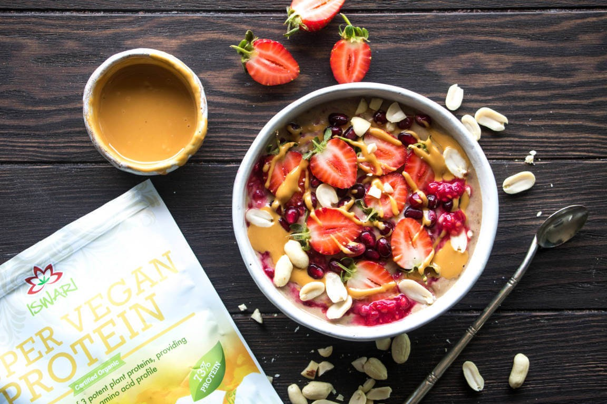

Receitas
Receita: bowl proteico rápido (30 minutos)
Ingredientes (2 porções)
- 300 g peito de frango em cubos (ou tofu para versão vegana)
- 1 xícara de quinoa ou arroz integral cozido
- 2 xícaras de folhas verdes variadas
- 1/2 abacate fatiado
- Legumes assados rápidos (pimentão, cebola, abobrinha)
- Molho: iogurte natural + limão + ervas
Modo de preparo
- Tempere o frango e grelhe até dourar (10–12 min).
- Asse os legumes em forno a 200°C por 15–20 min.
- Monte o bowl com grãos, proteína, folhas, legumes e abacate; finalize com molho.
Variações
Troque proteína por grão-de-bico ou salmão; use ervas e especiarias ao gosto.
Conclusão
Refeição completa em 30 minutos, balanceada em macronutrientes e fácil de replicar.